Candidate rules for human validation only; not prevalence claims. Gibson is excluded pending a geometry gate. S3D cards are retained only when rendered RGB-depth versus floorplan-proxy depth passes the conservative QC gate (MAD ≤0.5 m and correlation ≥0.2). Blue arrow = MAP; green arrow = GT.
Cause versus outcome: close-up, corridor-aligned, low structural variation, and descriptor collision are structural candidates. Extended structural view is context only, not an ambiguity claim. Yaw-only error and spatial error are posterior outcomes, not causal labels. Door-state mismatch requires manual RGB/map confirmation and is intentionally not auto-labelled here.
Rules: close-up = 90% of all 160 map rays ≤1.5 m and IQR/median ≤0.30; corridor = long central opening bounded by two near side walls; extended view = two nearby sides plus an opening; low variation = IQR/median ≤0.15; descriptor collision = lowest 5% same-scene, ≥3 m-distant structural descriptor match after excluding close-up/corridor/flat profiles; yaw-only error = position error <1 m and yaw error ≥30°; spatial error = position error ≥1 m.
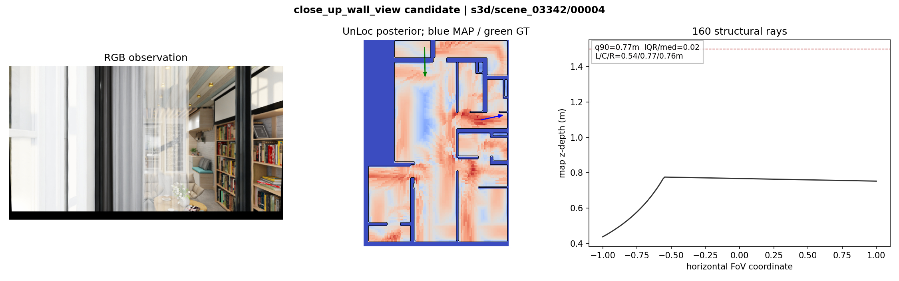
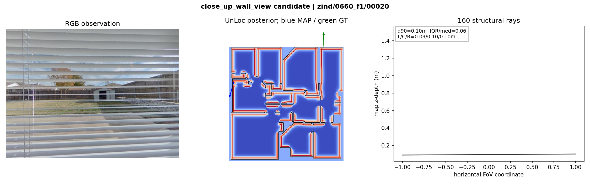
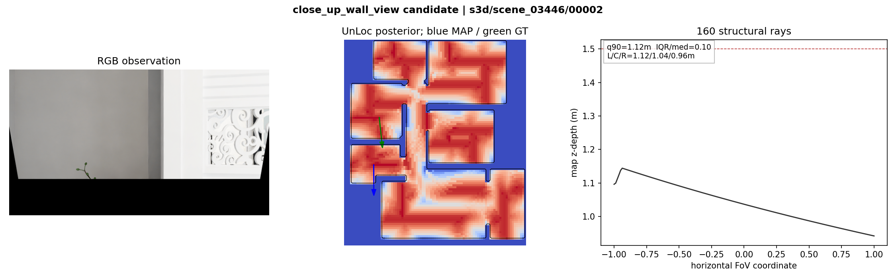
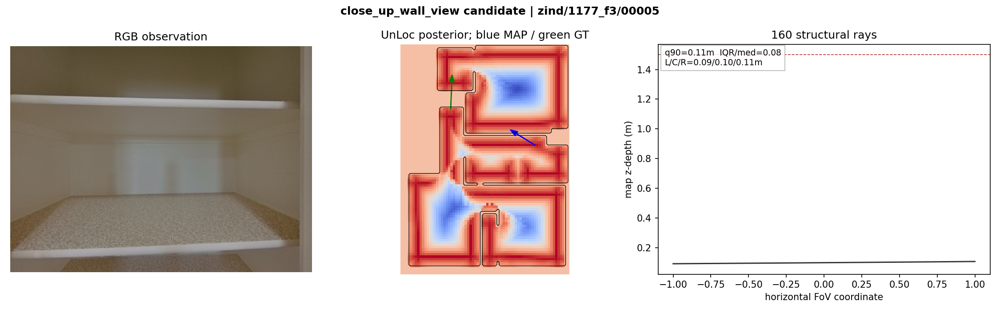
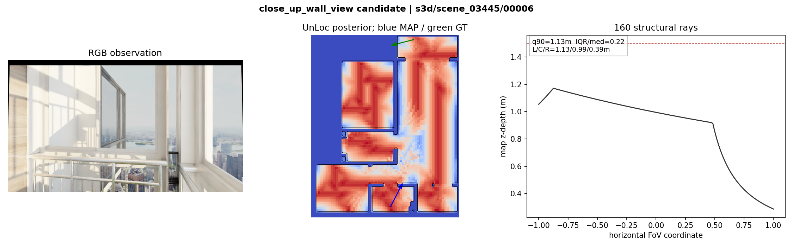
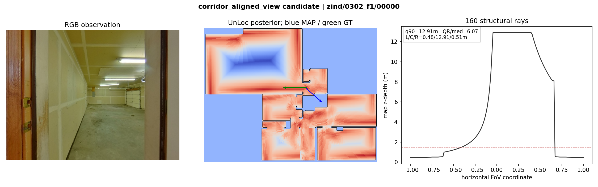
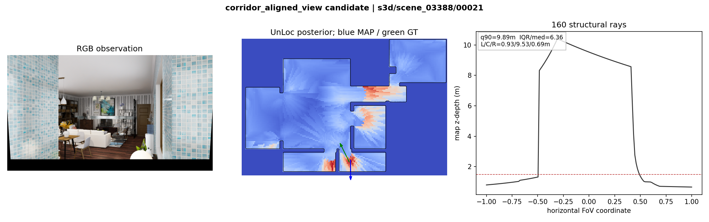
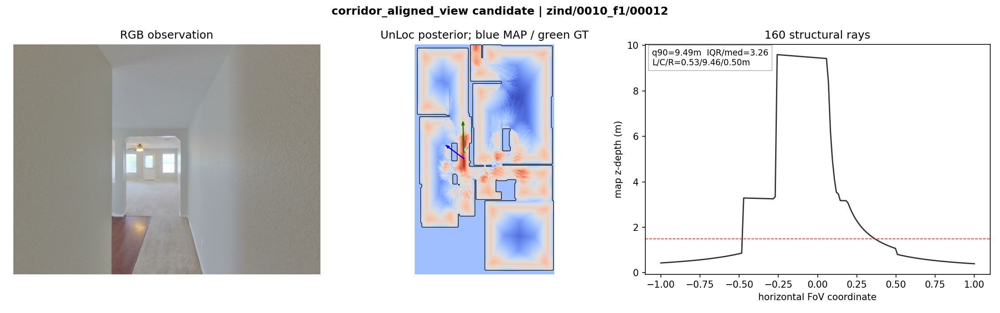
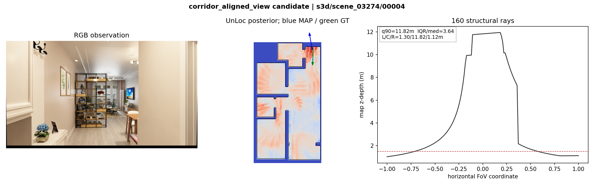
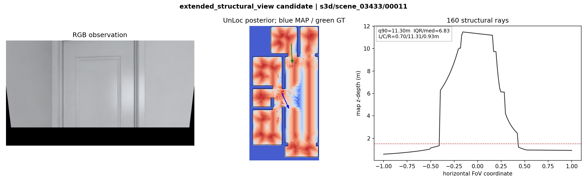
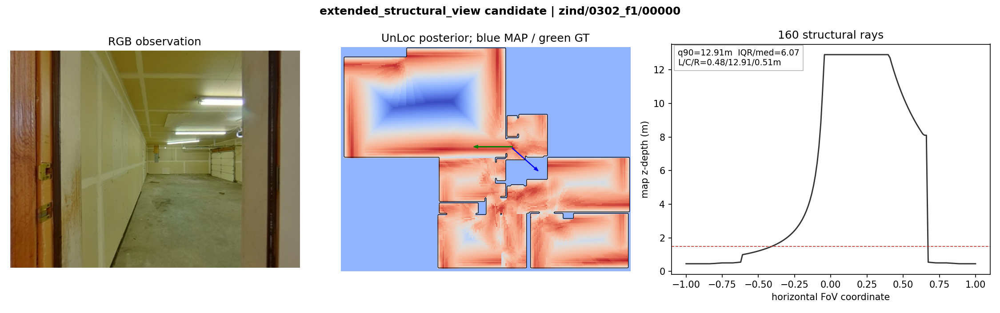
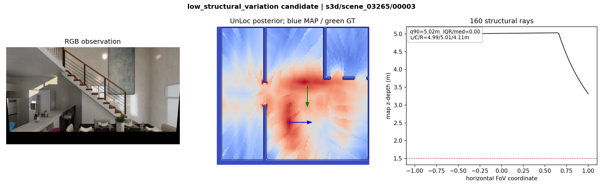
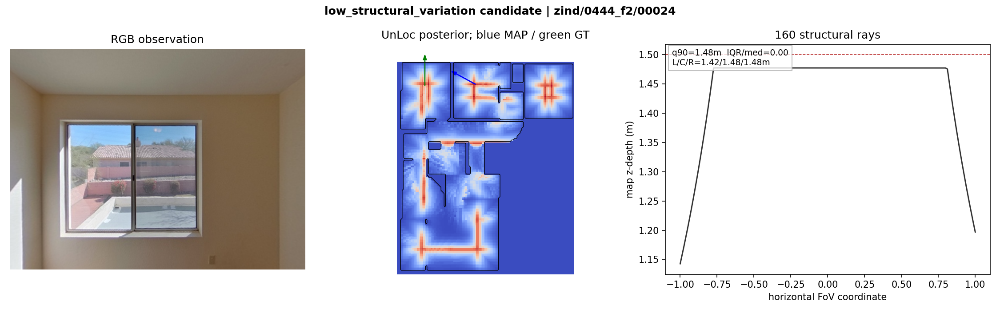
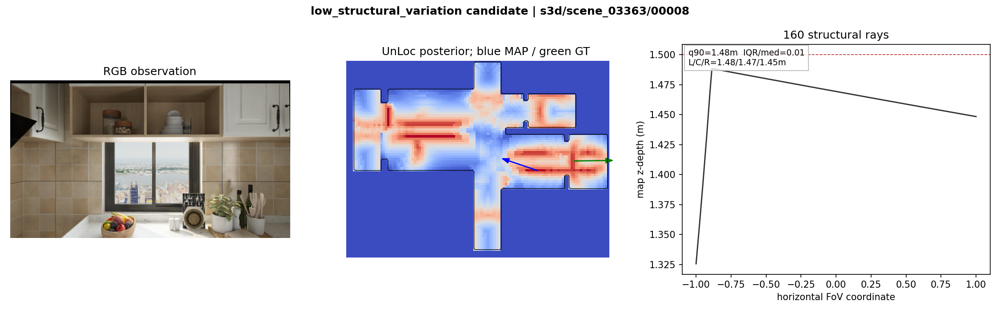
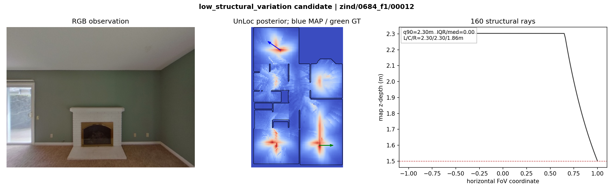
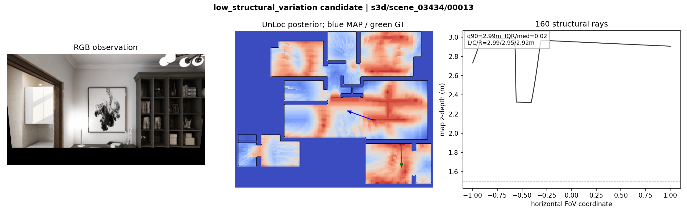
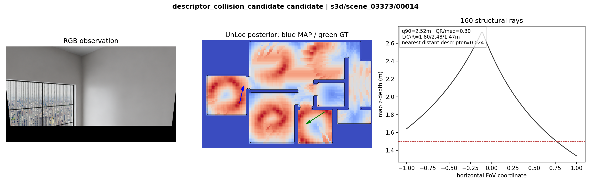
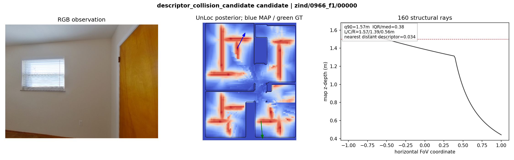
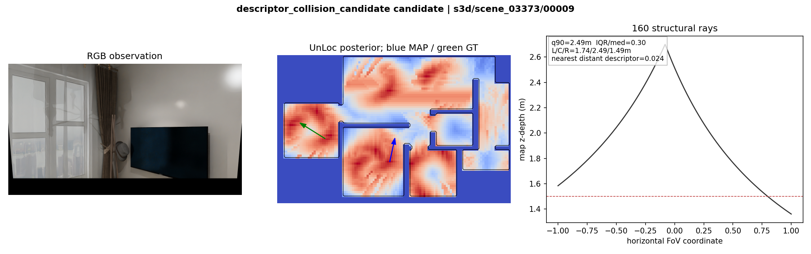
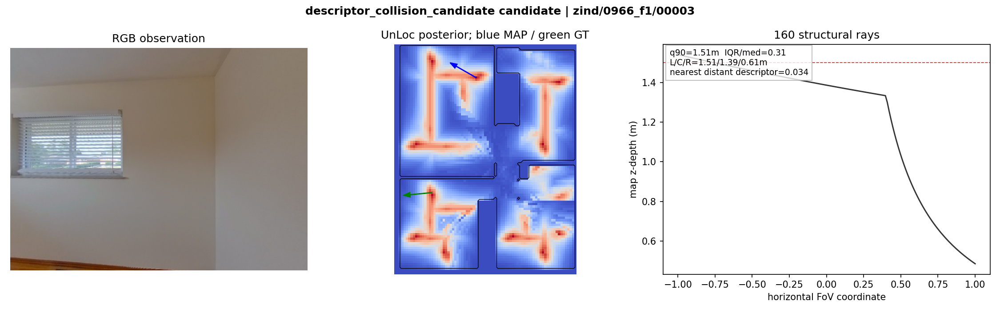
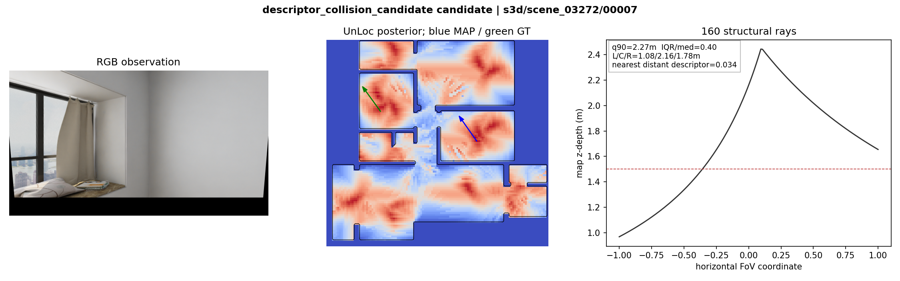
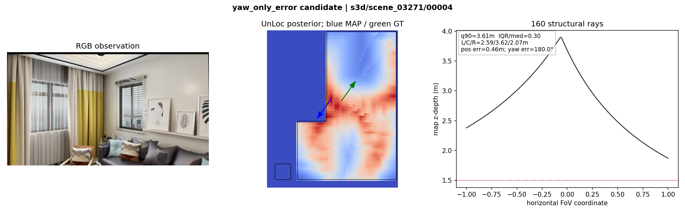
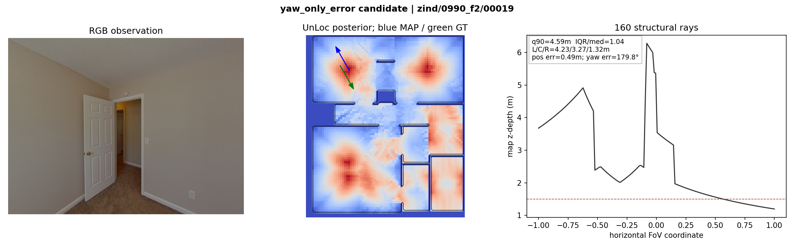
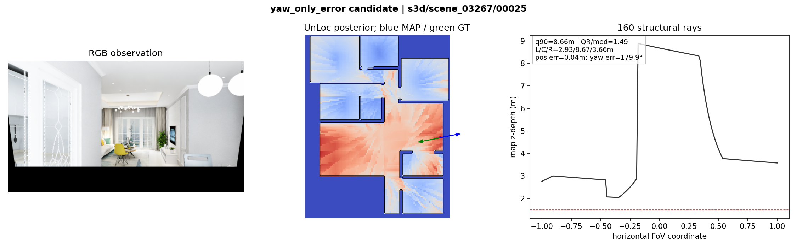
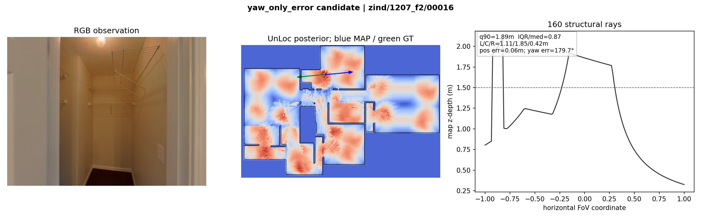
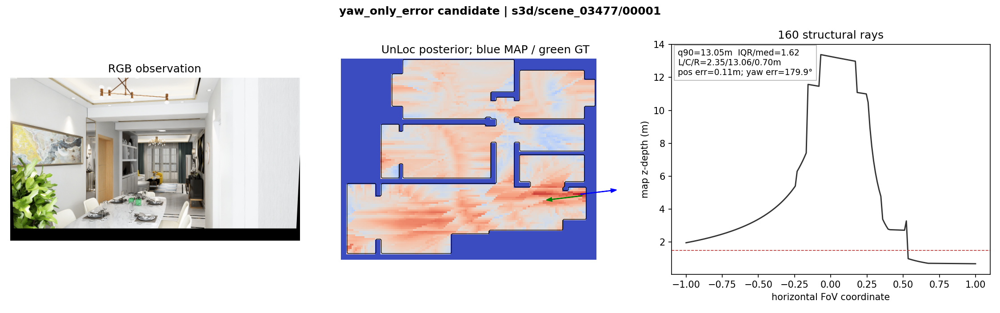
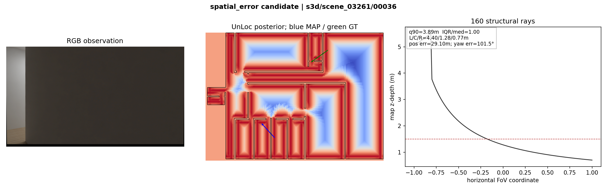
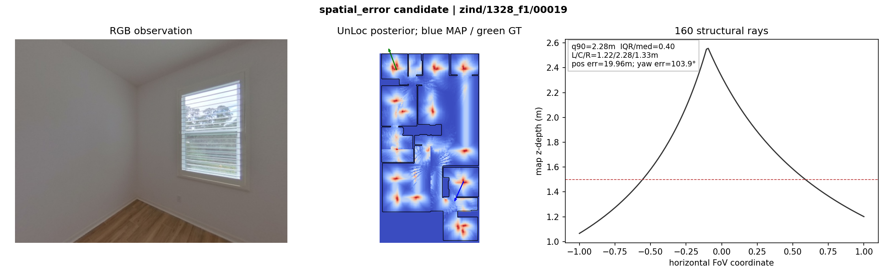
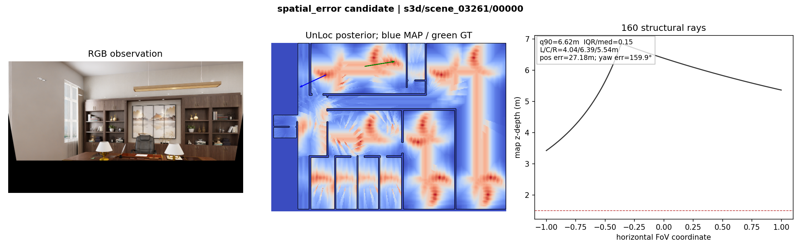
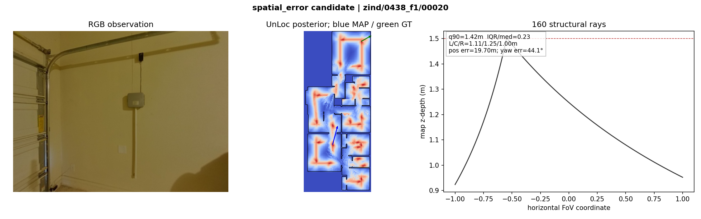
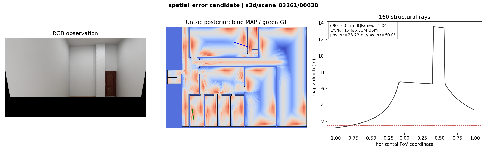